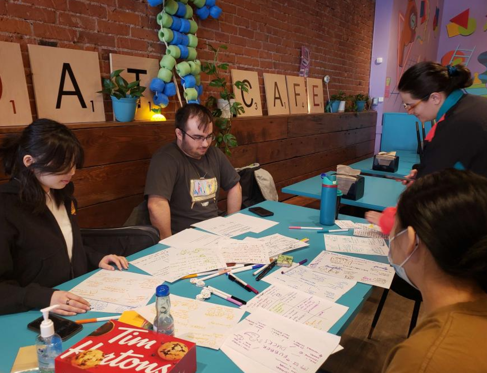
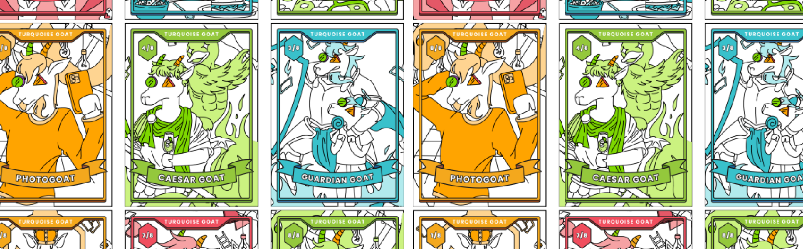

Contribution
As one of the UX Researchers, I conducted in-person ethnography, research and interviews. I led our process of designing these cards and used a combination of Figma and Adobe Illustrator to help design our mockups. I led the graphic design of posters, user-jounrey maps and slide decks.
What are Turquoise Goat Trading Cards?
A new Turquoise Goat experience, where customers are given a Turquoise Goat-exclusive trading card after their stay, with the opportunity to trade and purchase more cards. Each card showcases 8 unique card designs that connect together to form a collage that encompasses the different player personas who visit Turquoise Goat.
Client Goals
Turquoise Goat is a queer owned 90’s themed board game café that allows patrons to enjoy nerdy, nostalgia-themed meals and drinks made by the talented chefs and baristas, all whilst playing board games.
The focus of our design project was to enhance Turquoise Goat’s appeal as a destination where people can make personal memories with family and friends, and preserve the unique experience they built together
Design Opportunities


To further define what a destination meant, our team conducted onsite ethnography and interviews with 7 staff members and conducted remote interviews via zoom with 7 customers. Through these meetings, we uncovered opportunities for further exploration:
1. Even though the cafe is called Turquoise Goat, they under utilize their Goat Mascot in their branding
2. Turquoise Goat is meant to be a space where people can experience an idealized version of their childhoods
Key Research Findings
“I want Turquoise Goat to be a destination for people to come to for the long haul”
Based on a quote that stood out from our interviews, Ihas facilitated 2 participatory workshops, with the co-owners of the cafe and 3 additional customers to discover more about what a destination means for all parties involved with Turquoise Goat.
Through these meetings, it is found that a destination means:
A place where you can feel immersed in an unfamiliar world, due to its atmosphere, activities and uniqueness
A place to celebrate milestones and make personal memories with friends and family
A place where your experience was significant enough that you may want to take home a souvenir as a token of that visit
Now that we have defined what a destination means, these points served as a basis in our critical thinking when moving forward in our design process. Inspired by how customers have described their past experiences at the Turquoise Goat, we wanted to center our goals around:

Encapsulate the meaning of a destination and make sure these feelings come across to other guests

Give guests a way to preserve the memory of the time they spent at Turquoise Goat with friends and family

Who are we designing for?
To focus our thinking, we consolidated our research and created one user persona that encompasses all of our findings. Meet Enrique!
Enrique is a comedian and voice actor who enjoys things like board games, Dungeons and Dragons, and Pokémon. Unlike his friends Haerin and Miho, Enrique is not one to take too many photos to keep as a memory of his outings with friends. He does however, still value the cafe’s unique atmosphere, and would like a token to remember it by.

Final concept Proposal
Our final design for Turquoise Goat is exclusive Turquoise Goat trading cards that showcase 8 unique card designs that connect together to form a collage that encompasses the different player personas who visit Turquoise Goat. Additionally, customers will be able to purchase booster packs that contain 5 cards each. In the booster packs there are different colour variants and holographic finishes, which are exclusive to the packs.
Visual Design Process
As one of the main visual designers in my group, I opted for a vibrant colour palette that reflects Turquoise Goats branding and created a design system within Figma to ensure our group member’s designs remain consistent with one another and cohesive.
Scenario

Enjoying the Turquoise Goat Experience
Enrique and his pals Haerin and Miho go to Turquoise Goat. The group gets seated and starts having a great time playing board games and enjoying snacks together during their 3 Hour Stay and Play

Random draw of the collectible cards
Near the end of their stay, a game steward comes up to the group to remind them their time is almost up, and prepares their bill. Along with it, the game steward also hands each member of the party one random collectible card, face down.

Booster Pack information
The game steward also lets the group know the café is selling boosters packs of the trading cards, with each pack including a holographic card.

Seeing how their cards connect with one another
The group each admires the artwork on their trading cards and compare the cards with each other. Enrique notices that their cards are a part of a larger set that make up a collage.

Starting a Turquoise Goat collection
On their way out, Enrique notices that guests at other tables have trading cards in different colours and holographic finishes. This entices him to buy a booster pack before he, Haerin and Miho leave the café. The group looks forward to returning back and collect the rest of the cards.
Rationale
The Trading Cards are based off of a myriad of customers that frequent Turquoise Goat. The cards’ characters incorporate fun and quirky characteristics that customers will be able to relate and find commonalities within their party. As well, the card’s characters feature Turquoise Goat’s mascot, Billy the Goat. In addition, The trading cards will enrich the existing Turquoise Goat experience and give customers the incentive to come back to the café, ie. to collect more cards. The cards as well elevates the familiar, 90’s concept of trading card games in a way that fits-in and enriches the cafe’s personality.
Mockups


Reflection
Although this project has come to an end, these are some considerations that I would take to iterate this product further:
Researching sustainable card and packaging materials best fit for quality and reducing waste
Weighing production costs against gained value and finding manufacturers
Working out ways to minimize the strain of uncooperative customers on employees
This class has to be my toughest class yet in my academic career. Through this project, I learned so much about working with a real client, navigating team conflicts, communication, project management, and how to design a product that will be produced in the future. It was a great learning experience for me as I got to dive deep into design tools that would be used in the industry for 12 weeks. This project also came with a lot of challenges. Our design process was never linear. We were constantly diverging, converging, killing concepts, and going back to square one from meetings with our stakeholders, and critiques from customers, instructors and classmates. Many decisions were made during this project and we reframed our design focus many times, but it was these decisions and learning more about our users along the way is when we were able to reach our “Aaahh…Eureka!” moment.
This project was selected to be exhibited at our school’s Spring 2023 Semester showcase online , and I am extremely proud of how I grew as a designer from this project, and I am looking forward to working with more clients in the future.

More Related Projects
UX/UI Design, UX Research
Bye-nary
Bye-nary is an interactive narrative mobile application where users discover more about 2SLGBTQIA+ terms and local non-binary/trans businesses and spaces.
VIEW BYE-NARY